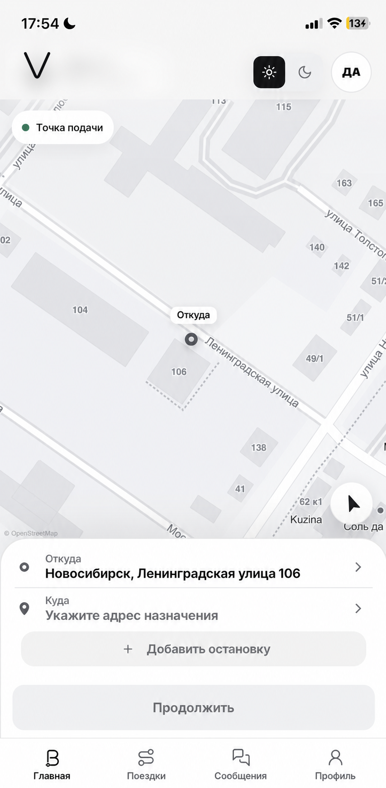
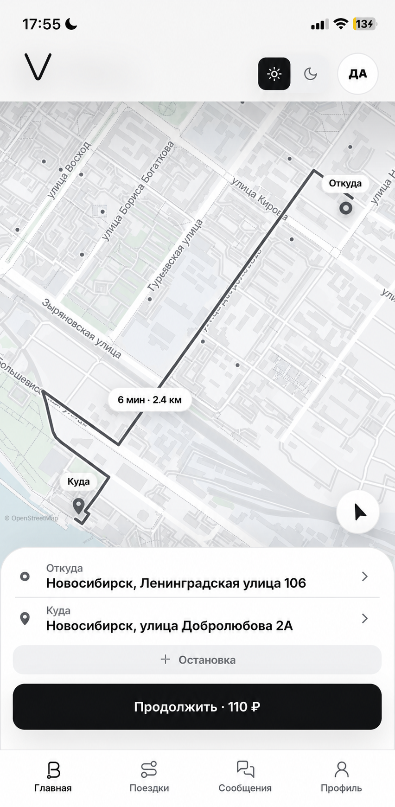
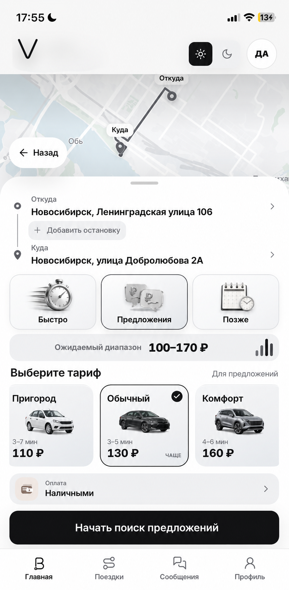

PASSENGER MOBILITY PWA
Поездка.
Без лишних шагов.
Маршрут, цена и заказ — на одном экране.
- Роль
- Product design
- Формат
- Mobile PWA
- Система
- Map-first flow



01От точки на карте
до готового заказа
ПРИНЦИП
Пользователь видит главное.
Система делает остальное.
6 минв пути
2,4 кммаршрут
3 состояниядо заказа
01 / МАРШРУТ
Точка подачи понятна сразу.
Карта, адрес и основное действие собраны в одной спокойной композиции. Следующий экран показывает весь маршрут.
02 / РАСЧЁТ
Цена понятна до подтверждения.
Режим поездки, тариф и способ оплаты находятся внутри одного последовательного шага.
Реальный интерфейс · светлая карта · пассажирский сценарий